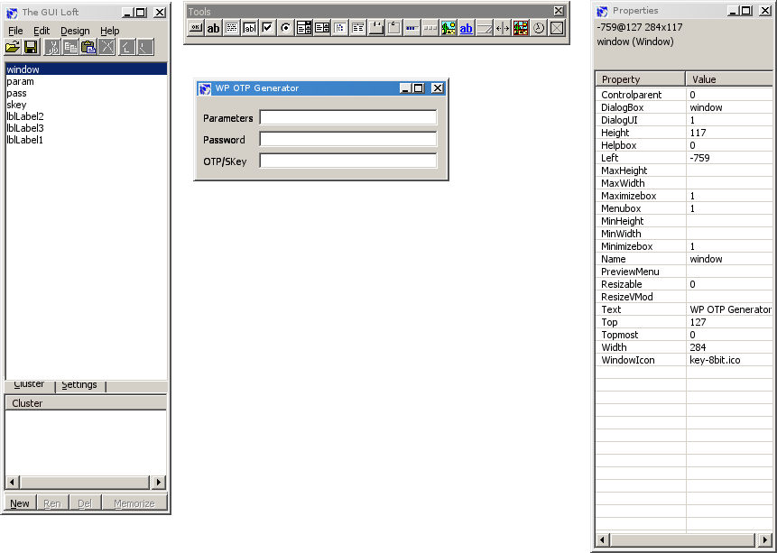

Santa doesn't have much work for his computer elves in the off-season, so he recently started contracting them out for the first three quarters of the year. Unfortunately for poor Gluggagægir most customers aren't using Unix-family systems. Worse still, he often has to create and support WordPress installations. Glugg was eventually able to convince some clients to install a plug-in for one-time password support. Of course, the desktops were not Debian and therefore lacked a native S/Key. Of course, being a good perl hack Glugg checked CPAN and found Crypt::SKey, but he needed to find a way to make its functionality accessible to his command prompt fearing Windows users. The GUI Loft to the rescue! Loft provides an intuitive GUI-based GUI designer shown in the screen shot below. With it you can produce a a non-threatening skin for you application with native platform controls based on Win32::GUI.
Thanks to WINE, Glugg had a snazzy interface for generating passkeys after a few minutes of banging around with a mouse on his Xm/OS laptop. Finally, he need only implement some event callbacks and his mission to bring security to the masses was complete.
The specification for a Loft application's skin is stored in a small binary file which you can easily load using the Win32::GUI::Loft::Design class, although other methods are available to you. One short-coming of this otherwise easy-as-pie system though, is that despite the documentation's example, the filename parameter to newScalar() is not optional. This means it is not possible to inline your Loft design file into DATA in an attempt to simplify distribution of your program.
Another minor peeve is that the position of the application in the window designer is stored in the binary and it serves as default location for the application window when it starts, although one could argue that this is a feature. If you find it a nuisance, you'll have to reposition the window programatically.
Finally, it shold be noted that winkey32.exe provides the same functionality as our example script, without all the dependencies/performance hit from PAR.

1 use Win32 (); 2 use Win32::GUI; 3 use Win32::GUI::Loft::Design; 4 5 my $binfmt = "otp2.gld"; 6 my $layout = Win32::GUI::Loft::Design->newLoad($binfmt) or 7 die("Could not open window file ($binfmt)"); 8 9 $win = $layout->buildWindow() or die("Could not build window\n"); 10 $win->Center(); $win->Show(); #Window position is saved in layout... 11 $win->SetForegroundWindow(); 12 $win->param->SetFocus(); 13 Win32::GUI::Dialog(); #Event loop 14 15 16 use vars qw($win @param); 17 use Crypt::SKey; 18 19 sub ::param_MouseMiddleDown{ 20 $win->param->Paste(); 21 $win->pass->SetFocus(); 22 } 23 24 sub ::param_LostFocus{ 25 my $param = $win->param->Text(); 26 $param =~ s/^\s+//; 27 @param = split/[- ]+/, $param; 28 $Crypt::SKey::HASH = uc($param[1]); 29 } 30 31 #Trapping 'VK_ENTER' is a bear so recalculate as we go, plus it looks cool 32 sub ::pass_Change{ 33 $win->skey->Text( Crypt::SKey::compute(@param[2,3], $win->pass->Text()) ); 34 $win->skey->Select(0,-1); $win->skey->Copy(); 35 } 36 __DATA__ 37 #Despite documentation, filename parameter to newScalar is not optional 38 #my $code = decode_base64(do{ local $/; <DATA> }); 39 #my $layout = Win32::GUI::Loft::Design->newScalar($code, '__DATA__') or 40 # die("Could not build window file <DATA>\n");